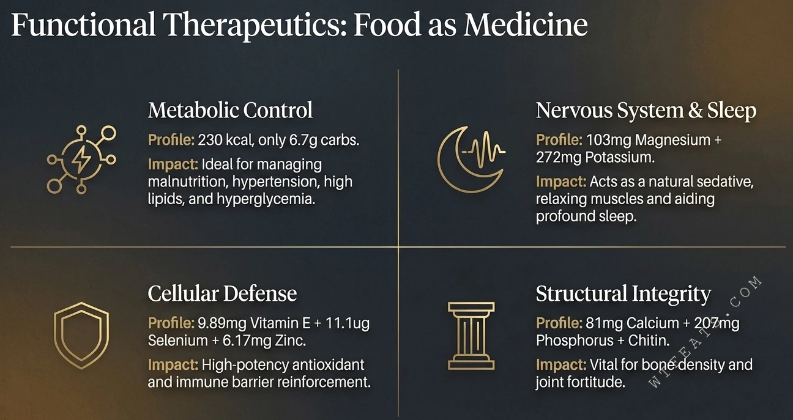
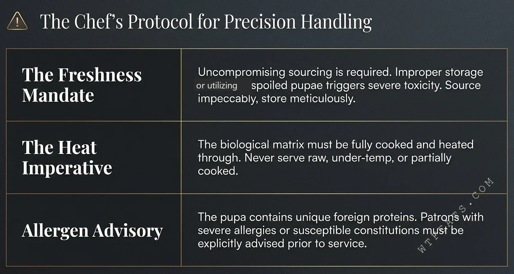

Beef and whole eggs are the reference points of conventional nutrition. Against the silkworm pupa, they barely register. Each mineral matrix below redraws the baseline — the pupa does not win these comparisons, it ends them.
1. The calcium matrix — bone fortifier
Beef carries roughly 1mg of calcium per 100g. A whole egg manages about 2.5mg. The silkworm pupa delivers 81mg.
2. The magnesium matrix — nature's sedative
Beef offers roughly 25mg of magnesium per 100g, whole eggs about 9mg. The pupa answers with 103mg — 4× the magnesium of beef and 12× that of whole eggs, relaxing muscles and promoting deep sleep.
The silkworm pupa is one of nature's most potent ingredients — but only when its biological boundaries are understood and its culinary craft is respected.
3. Functional therapeutic effects
Food as medicine is not a metaphor here. The functional ledger reads like a clinical profile:

- Metabolic regulation: 230 kcal with only 6.7g carbs — helps manage malnutrition, hypertension, hyperlipidemia, and hyperglycemia.
- Nervous system & sleep: 103mg magnesium + 272mg potassium — a natural sedative that relaxes muscles and promotes deep sleep.
- Cellular defense: 9.89mg vitamin E + 11.1μg selenium + 6.17mg zinc — potent antioxidant action, reinforcing the immune barrier.
- Structural integrity: 81mg calcium + 207mg phosphorus + chitin — critical for bone density and joint resilience.
4. The chef's precision handling protocol
Potency demands protocol. Three rules are non-negotiable when this ingredient enters a kitchen:

- Freshness requirement: source integrity must be rigorously maintained. Improper storage or spoiled pupae can trigger severe toxic reactions. Precise provenance and careful storage are non-negotiable.
- Heat requirement: the biological matrix must be thoroughly cooked. Never serve raw, undercooked, or partially heated — core temperature must reach the safety threshold.
- Allergen advisory: silkworm pupae contain unique heterologous proteins. Diners with severe allergies or sensitivities must be informed clearly in advance — no ambiguity, no omission.